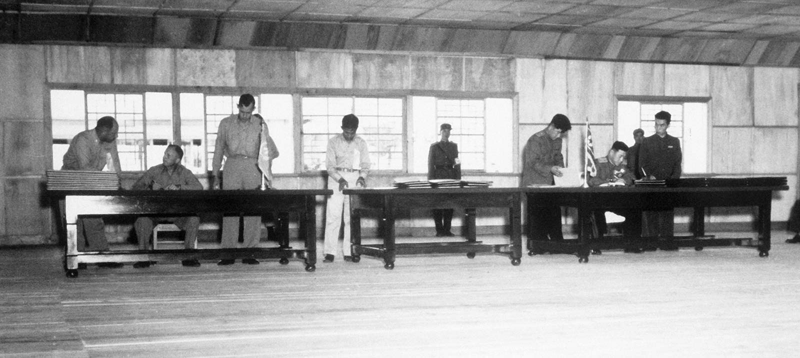

Directions: Fill in the chart as we study the war in Asia. Keep this page in your notebook. You will use it again on the review day before the unit test.

| Decision point | Won, lost, or settled | What the record shows |
|---|---|---|
| The paper war, spring 1950 | ||
| The rescue of South Korea, summer 1950 | ||
| The drive to the Yalu, autumn 1950 | ||
| The limited war held, spring 1951 | ||
| The armistice, July 1953 |
The decision that carried the most weight. Pick one row of the chart and write a short paragraph on the decision it records. What was chosen, what was the alternative, and how did the choice shape the way the war ended?
| Decision point | Won, lost, or settled | What the record shows |
|---|---|---|
| The paper war, spring 1950 | Settled on paper | After the Soviet atomic bomb of August 29, 1949 and the proclamation of the People's Republic of China on October 1, 1949, NSC-68 of April 1950 described a global struggle and called for defense spending to rise to roughly three times its level. Truman shelved the paper as too costly until the Korean War made the buildup policy. |
| The rescue of South Korea, summer 1950 | Won | North Korea invaded on June 25, 1950. The United States entered under the United Nations flag without a declaration of war, held the Pusan Perimeter, and landed at Inchon on September 15. Seoul was retaken within two weeks and the North Korean army in the south collapsed. The war's original aim, a preserved South Korea, was achieved. |
| The drive to the Yalu, autumn 1950 | Lost | United Nations forces crossed the 38th parallel and changed the aim to unification by force. China, whose warnings were discounted, attacked in force on November 25, 1950 with hundreds of thousands of troops. The advance became a retreat, Seoul fell again in January 1951, and the added aim of unification was given up. |
| The limited war held, spring 1951 | Settled | MacArthur pressed in public for a wider war against China, including a blockade and bombing in Manchuria. Truman refused each step and relieved him on April 11, 1951, defending civilian control of the military. The war stayed limited, and the front settled in stalemate near the 38th parallel. |
| The armistice, July 1953 | Settled | Talks that opened in July 1951 ran two years, stalling over prisoners who refused to go home. The armistice signed on July 27, 1953 stopped the shooting on a line close to the 38th parallel, with more than 36,000 American dead, Korean dead in the millions, and no peace treaty. |
The decision that carried the most weight. Strong answers name the choice, the alternative, and the consequence for the ending. On the drive to the Yalu: crossing the parallel converted a won war of preservation into a war against China, and every later event, the dismissal, the stalemate, and the armistice line, followed from it. On the dismissal: holding the limit kept the war from widening toward Soviet entry, at the price of accepting an ending without victory. On the paper war: NSC-68 supplied the logic that read a local invasion as a global test, which is why the United States fought in Korea at all.